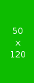

<div id="classic">
	<p>Widget with no link:</p>
	<figure>
		
		<figcaption>Test image</figcaption>
	</figure>
	<p>Widget with predefined link:</p>
	<figure>
		<a href="https://cksource.com">
			
		</a>
		<figcaption>Test image</figcaption>
	</figure>
</div>

<script>
	bender.tools.ignoreUnsupportedEnvironment('easyimage');

	CKEDITOR.replace('classic', {
		on: {
			pluginsLoaded: function (evt) {
				var editor = evt.editor,
					plugin = CKEDITOR.plugins.imagebase;

				plugin.addImageWidget(editor, 'testWidget', plugin.addFeature(editor, 'link', {}));
			}
		},
		height: 500
	});
</script>
